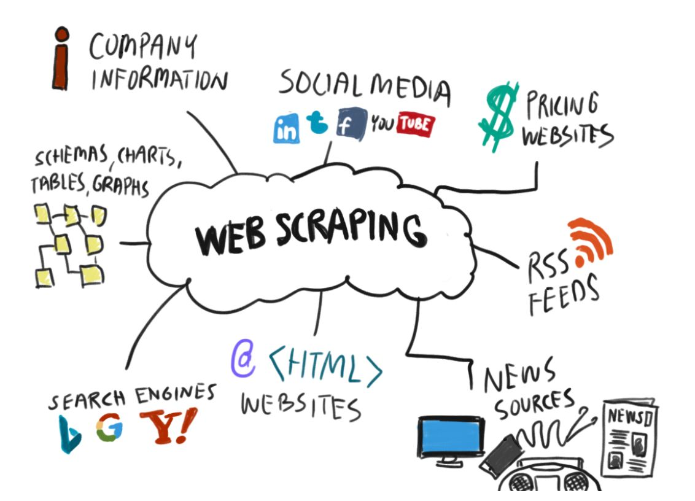

Design marketing strategies aimed at converting casual riders into annual members. In order to do that, however, the marketing analyst team needs to better understand how annual members and casual riders differ why casual riders would buy a membership, and how digital media could affect their marketing tactics.

In recent years, City Hotel and Resort Hotel have seen high cancellation rates. Each hotel is now dealing with a number of issues as a resutl, including fewer revenues and less than ideal hotel room use. Consequently, lowering cancellation rates is both hotels' primary goal in order to increase their efficiency in generating revenue, and for us to offer thorough business advice to address this problem.
The analysis of hotel booking cancellations as well as other factors that have no bearing on their business and yearly revenue generation are the main topics of this resort.
Stack Overflow’s annual Developer Survey is the largest and most comprehensive survey of people who code around the world. Each year, they field a survey covering everything from developers favorite technologies to their job preferences. The primary objective of the annual surveys is to gather data regarding technology usage and trends among developers.

Your client is a meal delivery company that operates in multiple cities. They have various fulfillment centers in these cities for dispatching meal orders to their customers. The client wants to help these centers with demand forecasting for upcoming weeks so that these centers will plan the stock of raw materials accordingly.


Super Store is a small retail business located in the United States. They sell Furniture, Office Supplies and Technology products and their customers are the mass Consumer, Corporate and Home Offices. The data set contains sales, profit and geographical information of Super Store. Our task is to analyse the sales data and identify weak areas and opportunities for Super Store to boost business growth.


Exploratory Data Analysis in Python and mini python projects.

Data Exploration in SQL using MS SQL Server.

Dashboards and Reports of all data analysis projects.

Web Scraping Projects using BeautifulSoup and Selenium.